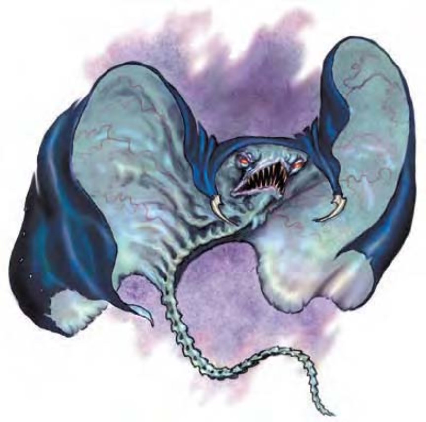

| 生命骰： | 6d8+18（45hp） |
| 先攻： | +7 |
| 速度： | 10英尺（2格），飞行40英尺（普通） |
| 防御等级： | 19（-1体型，+3敏捷，+7天生），接触12，措手不及16 |
| 基本攻击/擒抱： | +4/+13 |
| 攻击： | 尾击+8近战（1d6+5） |
| 全回合攻击： | 尾击+8近战（1d6+5）以及啮咬+3近战（1d4+2） |
| 占据/触及： | 10英尺/10英尺（啮咬距离5英尺） |
| 特殊攻击： | 低鸣，包卷 |
| 特殊能力： | 黑暗视觉60尺，阴影转移 |
| 豁免： | 强韧+5，反射+5，意志+7 |
| 属性： | 力量21，敏捷16，体质17，智力14，感知15，魅力15 |
| 技能： | 躲藏+8，聆听+13，潜行+12，侦察+13 |
| 专长： | 警觉，战斗反射，精通先攻 |
| 区域： | 地底 |
| 组织： | 单独，小集团（3-6），或成群（7-12） |
| 挑战等级： | 5 |
| 宝物： | 标准 |
| 阵营： | 通常是混乱中立 |
| 进化： | 7-9HD（大型）；10-18HD（超大型） |
| 等级调整： | - |
一件黑色长斗篷垂挂洞穴石壁。忽然间斗篷滑落，乘着一阵冷风飘过洞穴。之后，斗篷张开变成一对黑翼，底部扬着一条骨感、鞭子似的尾巴。该生物飞向前，张开多牙的大嘴，类似鳐鱼的躯体暗影中，露出一对闪着红光的眼睛。
蛰伏伪怪是在地底深处猎食的诡异怪物。除非另有残酷的取乐计划，他们会毫不迟疑地无情杀害入侵者。
蛰伏伪怪休息或等候猎物时，其外观与一般黑色斗篷几乎无异（蛰伏伪怪的白色爪子很像骨质扣环）。只有当蛰伏伪怪飞起，其恐怖本质才会显现。
蛰伏伪怪有自己的神秘目标。他们是智慧生物，但思想怪异，只有极少数人类曾与蛰伏伪怪进行有意义的接触。
蛰伏伪怪翼展约8英尺宽，约100磅重。
蛰伏伪怪说地底通用语。
战斗蛰伏伪怪通常静静的躺着，查看和聆听四周的动静，找寻猎物的踪迹。面对单独的敌人时，蛰伏伪怪会使用包卷攻击。面对多名敌人时，它会有尾巴抽打，并配合它的低鸣和阴影转移来减少敌人的数量，然后再包卷最后的幸存者。数只蛰伏伪怪在战斗时通常会分散开来，留下一到两只在后面使用特殊能力，其他的则在前面展开近战。
低鸣Moan（Ex）：蛰伏伪怪能通过一个标准动作发出危险的次音速低鸣。通过改变生波频率，蛰伏伪怪能产生下列四种效果中的一个。蛰伏伪怪本身对这些影响心灵的超声波攻击免疫。除非有特殊说明，否则生物一旦通过某个低鸣效果的豁免检定，那么它在24小时之内不会再为同个蛰伏伪怪的同种低鸣效果所影响。所有低鸣效果的豁免DC基于魅力调整值。
焦躁Unnerve：任何处于60尺扇形范围内的对手在进行攻击和伤害检定时会受到-2减值。被迫连续听到该低鸣6轮或以上的对手必须成功通过DC15的意志检定，否则进入恍惚状态，无法攻击或防御自己直到该低鸣结束。
恐惧Fear：任何处于30尺扇形范围内的对手必须通过DC15的意志检定，否则恐慌2轮。
反胃Nausea：任何处于30尺锥形范围内的对手必须通过DC15的强韧检定，否则会反胃和虚弱。受影响的对手会俯卧倒地而且会反胃1d4+1轮。
僵住Stupor：距离蛰伏伪怪30尺范围内的单一对手必须通过DC15的强韧检定，否则会受到如同怪物定身术的效果所影响长达5轮。即使通过检定，如果蛰伏伪怪再使用这个效果，该对手还要再做豁免检定。
包卷Engulf（Ex）：蛰伏伪怪可以通过一个标准动作用它的身体包住中型或者更小的生物。蛰伏伪怪在尝试擒抱时不会引发借机攻击。如果它成功将对手定身，就能以+4攻击加值啮咬被包住的受害者。在此同时它还可以用它鞭子似的尾巴攻击其他目标。正在包住一名对手的蛰伏伪怪如果被其他攻击命中，其伤害一半作用在它本身，而另一半则作用到被包住的受害者身上。
阴影转移Shadow Shift（Su）：蛰伏伪怪能操纵阴影。这项能力只在昏暗区域发生作用，它可能产生三种效果。
模糊视线Obscure Vision：蛰伏伪怪获得隐蔽（20%失手率）1d4轮。
舞动图景Dancing Images：效果如同镜影术（施法等级6）。
无声幻影Silent Image：效果如同无声幻影法术（DC15，施法等级6）。其豁免DC基于魅力调整值。